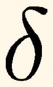
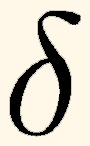
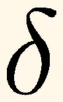

en lieu et place de

en lieu et place de

Article pour l'Echo de Linux (Juillet 1996)
Benjamin Bayart (bayart@lep-philips.fr)
Dans cet article, j'aimerais aborder deux problèmes simples concernant les fontes TeX. Le premier est un problème de date de version, le second relève plus du détournement involontaire de copyright et les deux peuvent vous gêner.
Ces deux problèmes sont décrits chez Knuth soi-même.
Les fontes Computer Modern (les fontes standard sous TeX) ont été légèrement améliorées durant le printemps 1992. Il semblerait que les modifications n'aient pas été tout à fait assez diffusées au goût de Knuth, aussi, comme lui, je vous invite a vérifier que vos fontes sont suffisament récentes.
Tapez donc un delta minuscule (en grande taille pour bien voir) dans votre document, par exemple:
{\huge $\delta$}
Si vous voyez appraître
en lieu et place de

alors vos fontes sont trop vieilles, et il convient de les remplacer, les nouvelles sont un poil plus jolies.
Ceci dit, cela me surprendrait grandement que l'on trouve des fontes obsolètes sur des distributions livrées avec Linux (que ce soit NTeX ou teTeX), mais il vaut mieux vérifier; d'autre part, certains d'entre vous utilisent peut-être TeX ailleurs que sur leur machine Linux.
2 - Utilisez les versions officielles
Pour ceux d'entre vous qui doivent renouveler leurs fontes à cause du problème précédent, prenez garde a bien récupérer les bonnes versions des fontes.
Pour les autres, une fois de plus, vérifiez votre système.
En effet, Knuth signale le problème comme suit
Ce problème touche pleinement la communauté Linux puisque les versions pirates des fontes ont été incorporées, par mégarde n'en doutons pas, dans NTeX, donc dans la distribution Slackware, en particulier celle de Mars 1995 (rien n'est précisé pour les autres antérieures ou postérieures).
Dans ce cas précis, il convient donc de vérifier avec attention les fontes installées sur votre système, pour ce faire, c'est très simple:
Edgard~: tex
This is TeX, Version 3.1415 (C version 6.1)
**\setbox0 = \hbox{ho} \showbox 0
> \box0=
\hbox(6.94444+0.0)x10.55559
.\tenrm h
.\tenrm o
! OK.
<*> \setbox0 = \hbox{ho} \showbox 0
? x
No pages of output.
Si TeX signale une largeur de boîte différente de 10.55559, alors vous avez la version erronée des fontes.
Si vous avez des fontes trop vieilles, le problème est plutôt simple à résoudre: effacer de votre disque dur tout ce qui touche aux fontes Computer Modern (y compris les bitmaps), rapatrier les dernières versions depuis le site CTAN le plus proche (ou n'importe quel CD pas trop vieux) et tout remettre en place. Ça, c'est pas trop compliqué.
Pour les miroirs CTAN en France, je connais l'ibp et le loria.
Si vous avez les fontes pirates, par contre, le problème est tout autre, en effet, non seulement il faut remplacer toutes les fontes Computer Modern, mais également toutes celles qui sont construites à partir d'elles (et elles sont nombreuses).
Bref, la meilleure et la plus rapide des méthodes est encore de désinstaller TeX et d'en installer un autre plus récent, par exemple teTeX.
Ceci dit, si vous avez amélioré longement et peti à petit votre installation, par exemple en lui rajoutant un par un des packages ou d'autre fontes, alors il conviendra plutôt de choisir l'approche suivante
Les bitmaps des fontes, dixit Knuth, ne seraient pas affectés par ces défauts dans les fontes.
4 - Comment refaire un fichier .tfm
Rappelons tout d'abord ce qu'est un fichier tfm. Un fichier tfm (pour TeX Font Metric) est un fichier qui contient les dimensions très précises de chacun des ceractères ansi que les règles de positionnement de ceux-ci. Ils sont calculés une et une seule fois par fonte, par opposition aux fichiers pk (pour PacKed) qui contiennent les bitmaps compressés des fontes et sont donc recalculés pour chaque résolution.
Les fichiers de bitmaps et de métrique sont générés par METAFONT lors d'une compilation, exactement comme les dvi sont générés par TeX.
Reste donc simplement à savoir lancer une compilation avec METAFONT. C'est très simple:
mf "\mode:=cx; nonstopmode; input la_fonte" rm -f la_fonte.log rm -f la_fonte.300gf
5 - Comment refaire un fichier .fmt
Rappelons qu'un fichier fmt, un format, est produit par une version spéciale de TeX qui s'appelle initex, cette version se comporte comme le vrai TeX sauf qu'elle possède une primitive \dump qui permet de faire une copie de la mémoire sur le disque.
Il y a généralement deux fichier .fmt, celui de LaTeX: latex.fmt et celui de TeX: tex.fmt ou plain.fmt.
Voyons d'abord comment refaire le format LaTeX:
Edgard~:initex latex.ltx [ beaucoup de bavardage ] ... dumped to latex.fmt
Pour TeX, ça va être un tout petit peu plus complexe, mais pas trop. En fait, là aussi c'est basé sur
Edgard~:initex plain.texmais il peut se produire que TeX demande un nom de fichier (s'il ne trouve pas hyphen.tex normalement) il faudra alors lui donner le nom du vrai fichier de césure anglophone sur votre système (c'est généralement UShyphen.tex ou quelque chose de ce goût là).